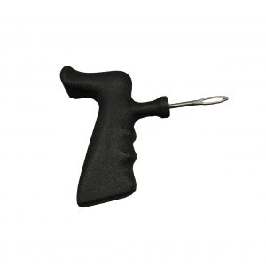

HERRAMIENTAS PARA INSERTACION DE PERMACURES

Las herramientas y accesorios TECH Insert de acero de alta resistencia a la tracción se utilizan para instalar Permacures, insertos de sello de flujo y reparaciones de cuerdas a través de la lesión del neumático. La herramienta Insert-O-Matic está especialmente diseñada para instalar insertos de sello de flujo y eliminar posibles roturas.
HERRAMIENTAS DE MARCADO
¡Marca esto! TECH se enorgullece de ofrecer lápices de marcadores mecánicos de alta calidad y alto rendimiento, marcadores de pintura Mini-Twist y marcadores de pintura sólida a nuestra base global de clientes. Los marcadores de pintura y los marcadores mecánicos son una parte integral del proceso de inspección, reparación y identificación de neumáticos. Las barras de pintura y los marcadores de pintura combinan la durabilidad de la pintura real con la comodidad de un crayón.
PUNTADAS, RASPADORES Y HERRAMIENTAS DE CORTE
Las grapadoras TECH están disponibles en una variedad de configuraciones y son fundamentales para garantizar que la reparación se unan al revestimiento interior del neumático para garantizar una fuerte adhesión. Los raspadores TECH, cuando se usan con el solvente de limpieza adecuado, eliminan rápida y efectivamente los contaminantes del revestimiento interno del neumático.
CEPILLOS
Los cepillos de alambre encapsulados de TECH se usan para quitar el caucho que rodea los cables de acero cuando se realizan reparaciones de secciones, lo que permite quitar los cables de acero dañados sin que se quemen. Los cepillos también son herramientas efectivas para limpiar las superficies pulidas del revestimiento interior.
ADAPTADORES, CHUCKS Y ACCESORIOS
La gama de accesorios de reparación de mangueras de aire de ECH incluye pinzas y pinzas de aire de alta calidad, pinzas para pies de duelo, kits de reparación de mangueras de aire, así como una línea completa de acopladores de aire.
LUBRICANTES PARA HERRAMIENTAS DE AIRE
El aceite de herramienta neumática TECH está especialmente formulado para maximizar el rendimiento de la herramienta neumática. Nuestro Air Tool Oil previene el óxido y la corrosión mientras lubrica y protege los componentes internos, lo que aumenta la vida útil de la herramienta y permite un arranque más suave.
TALADROS, BUFFERS, MARTILLOS DE AIRE Y VACÍO DE AIRE
El uso de la herramienta neumática adecuada con las RPM correctas para el procedimiento correcto es vital para hacer una reparación adecuada de los neumáticos. TECH ofrece una línea completa de herramientas neumáticas y accesorios que incluyen taladros neumáticos para preparar lesiones en los neumáticos, amortiguadores de aire de baja velocidad para preparar superficies de goma, amortiguadores de aire de alta velocidad para preparar cables de acero y martillos neumáticos para adherir firmemente grandes reparaciones a Ag, Camiones y Off Neumáticos de carretera.
PISTOLAS DE IMPACTO
TECH ofrece una gama completa de llaves de impacto de alto rendimiento y kits de reparación. De acuerdo con la adhesión de TECH a la calidad, garantizamos un alto rendimiento a través de nuestra llave de impacto, pruebas estrictas e inspecciones de calidad. Las llaves de impacto vienen en una variedad de unidades de salida y rangos de par de trabajo y pasan la certificación CE y superan los estándares ISO.
CUBOS DE IMPACTO
¡No se conforme con los zócalos y juegos de zócalos importados de baja calidad! TECH suministra una línea completa de servicio pesado, impacto neumático de alta calidad y tomas especiales y juegos de tomas. Los zócalos se producen utilizando acero de aleación de cromo-molibdeno de la más alta calidad, así como también se adhieren a los procesos y equipos de fabricación más modernos, lo que garantiza el equilibrio correcto de resistencia y durabilidad del zócalo.
GABINETES
¿Está su estación de trabajo de reparación de neumáticos en desorden? Los gabinetes de almacenamiento TECH y la estación de herramientas de reparación profesional brindan un medio profesional y eficiente para almacenar adecuadamente todas las herramientas de reparación de neumáticos, accesorios, productos químicos y reparaciones, manteniendo su lugar de trabajo organizado y reduciendo la pérdida de productos.
PROBADORES DE BATERÍA
TECH pone en marcha su motor con probadores del sistema de batería de 12 voltios y 24 voltios.
EQUIPO DE PROTECCIÓN PERSONAL
TECH tiene una amplia gama de máscaras y gafas de grado industrial de alta calidad. Diseñado para proporcionar protección contra una amplia gama de riesgos para la salud y la industria.
GATOS HIDRAULICOS
Los gatos de garaje / piso TECH están construidos con materiales de alta calidad y están cargados con características para aumentar la durabilidad y eficiencia de cada unidad. Los pistones de la bomba se colocan en un ángulo de 45 grados para que siempre se use una carrera de bombeo completa; La válvula universal de liberación conjunta permite bajar el gato con una carga muy precisa; Cada modelo viene equipado con un protector de mango.
BAZOOKA Y SEPARADORES DE PESTANA
Cualquier técnico le dirá que romper un talón de un neumático puede ser una de las partes más frustrantes del proceso de cambio de neumáticos. TECH proporciona una amplia gama de herramientas manuales y eléctricas para romper talones para que cada cambio de neumáticos sea rápido y fácil. Bead Seating se hace fácil gracias a la línea de tanques de asientos de talón de TECH, que incluyen Bead Bazooka y Bead Booster, que han establecido un nuevo estándar de potencia y eficacia en asientos de talones.
BALANCEADORAS DE TODO TIPO
La robustez estructural, combinada con el bloqueo neumático de la rueda y el medidor con entrada automática de los datos de la rueda, hacen que el equipo CEMB sea una máquina muy robusta, confiable y rápida. Debido a su tiempo de ciclo extremadamente reducido, es la primera opción para los principales fabricantes de neumáticos para camiones. Viene completamente ensamblado.
DESARMADORAS DE LLANTAS
Un cambiador de neumáticos de columna de inclinación con bloqueo automático de calidad profesional presenta un brazo de presión de alto rendimiento HPA, un brazo de presión central de caída adicional y un ayudante de elevación de neumáticos, muy recomendable para ayudar fácilmente en el mantenimiento de alto rendimiento y correr neumáticos desinflados con paredes laterales rígidas y ruedas difíciles con profundidad centros de caída. Cuenta con cilindros de sujeción de mesa doble con espacio de ahorro debajo del rango de sujeción ajustable de la mesa.
ALINEADORAS DE CARRO Y CAMION
Los robustos sensores inalámbricos CCD de ocho cámaras y las ligeras abrazaderas de las ruedas con agarradores de neumáticos conforman este sistema de alineación de ruedas CCD de ocho cámaras para camiones y autobuses de servicio pesado. Diseñado con electrónica de última generación y software eficiente. El operador puede configurar rápidamente el proceso de alineación para alinear camiones pesados de un solo eje de dirección a siete ejes combinados de dirección y transmisión.